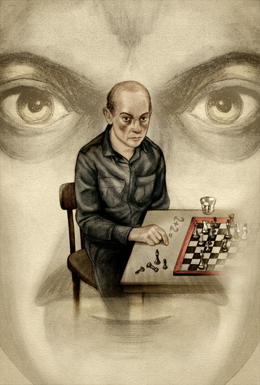

六
栗树咖啡馆冷清清的，一线斜阳透过窗玻璃投在灰尘蒙蒙的台面上。这是寂寞的十五点，电幕渗出细细的音乐。
温斯顿在他惯常坐的角落坐着，望着空杯子发呆，不时举起头来望着墙上贴着的那张大面孔：老大哥在看管着你。也不用他招呼，侍者就来把他面前的空杯子倒满胜利杜松子酒，又从另外一个瓶子摇了几粒有丁香味的糖精进去。这是栗树咖啡馆的招牌酒。
温斯顿静听着电幕的声音。现在播放的虽然是音乐，但和平部可能随时中断音乐节目，发出特别新闻简报。这一阵子非洲前线传来的消息令人担心，他也为此事一天忐忑不安。欧亚国（大洋邦和欧亚国交战，大洋邦一直就和欧亚国交战）大军南移，效率惊人。午间报道虽没有说出任何地点，但刚果海岸可能已成战场，布拉柴维尔和利奥波德维尔都受到威胁。我们不用看地图也知道危险出在哪里。战事发展下去，大洋邦不但可能丢了中非，而且第一次在本土受到威胁。
一种无以名之的强烈感情涌上心头，但不久又冷下来了。他决定不再为战争的事情烦心了。自获释以来，他无法为任何问题集中思想。他端起杯子，一饮而尽。他对胜利杜松子酒的反应还是跟以前一样，酒精一下肚就打冷战，有时还想吐。这东西真可怕。丁香油和糖精本身的气味就不好受，不但不能中和杜松子酒的油腻腻感觉，反而使它更难喝。最可怕的就是这种气味在他身上日夜不散，使他脑中不时联想到那东西的气味——
即使在脑中，他也不敢把这东西的名字叫出来，也尽量不去想它的样子。他只是隐约地知道这东西的存在，它曾经爬近他的脸，腥味扑鼻。酒精上升，他打了一个嗝。自获释以来，他体重增加了，气色也恢复了，比以前红润多了——也许应该说：太红润了。他脸上的轮廓变得粗厚，鼻子和颊上的皮肤变红，连那块秃了的头皮也红了。一个侍者也是没有等他招呼就给他一份当天的《泰晤士报》和一个棋盘，报纸上有一栏是棋谱。这时侍者看到他的酒杯已空，又给他添了酒。他们已搞清楚他的习惯，不用吩咐就自动送来。他一进栗树咖啡馆，棋盘等着他，角落的位子也等着他。即使客人来多了，这位子还是他的，因为没人愿意靠近他。他喝了多少杯酒，自己也懒得去数了。偶尔侍者递给他一张脏脏的纸条，据说是账簿，但他相信他们少收了他的钱。不过，即使倒过来，他们报假账，多收他的钱，他也觉得无所谓。这些日子他有的是钱。他还有一份可说是拿干薪的工作，待遇比以前的差事还要好。
电幕音乐停了。温斯顿抬头倾听，但播出来的却不是前线军事新闻，而是迷裕部的简报。原来上一季第十个三年计划中，鞋带超产达百分之九十八。
他翻开棋谱来看。这是黑白二马的巧妙残局。“白子进二将死。”温斯顿举头望了望老大哥。白子为什么老是能够将死黑子呢？没有例外，从来如此。自世界开始以来，所有的棋谱中都是白子棋高一着的。这是不是象征永远不变的真理：善最后必能胜恶？他又看了看老大哥一眼。那张大脸也在凝视着他，充满了无言的威力。白子总是赢的。
电幕的声音顿了顿，然后用极其严肃的口吻宣告：“大家听着！请留意在十五点三十分收听重要新闻！十五点三十分！最重要的消息！十五点三十分，万勿错过！”音乐又响了。
温斯顿心中一动：一定是前线来的新闻简报了。他的直觉告诉他这准是坏消息无疑。这一天内，他一想到大洋邦在非洲受重创时，心中就有一阵激动。他闭起眼睛就似乎看到欧亚军队如排山倒海的蚂蚁一样冲过从未断过的防线，卷入非洲的尖端。总有办法包围他们吧？西非海岸的轮廓在他脑中浮现出来。他捡起白子移前，这着走对了。正当他看到黑蚂蚁群南移时，另一支军队却像神兵天降突然出现并从后面包围，切断他们的海陆交通。他感觉到这支神兵部队是从他的意念产生出来的。但行动要快，因为如果欧亚国控制了整个非洲，如果他们在好望角取得空军和潜艇基地，就可以把大洋邦切成两段。后果不堪设想：失败、倾覆、重分世界，或者是党的末日。他深深地吸了一口气。情感真复杂，或者应该说在温斯顿心中斗争的情感层次真复杂，搞不清哪一层才是最隐蔽的。
情绪的冲突已过，他把白子放回原位，不过他现在还是不能集中精神研究棋谱。他又胡思乱想了，一边漫不经心地在台上的尘垢上用指头写着：
2＋2＝5

“他们不能跑到你脑子里去。”朱丽亚说过。但他们能跑到你脑子里来。“在这里发生在你身上的事，永远改不了的。”奥布赖恩说过。这话一点不假，你做的一些决定，所采取的一些行动，永远无法补救。他们把你的心灵灼伤，无法复元。你变得麻木不仁。
释放后他跟朱丽亚见过一次面，谈过一次话，这不会引起什么麻烦的，因为他直觉地知道现在他们对他的行为不再感兴趣了。如果朱丽亚和他愿意的话，还可以安排第二次见面的机会。事实上他是碰巧在公园内碰到她的。那是寒风刺骨的三月天，大地硬得像块铁板，草地干枯。几棵孤独的藏红花好不容易从地上爬出来，一下子就被风吹折了。他的眼睛也被风吹得流着泪，手冷得僵了，正匆匆忙忙赶路。突然在离他不到十米的地方，他看到朱丽亚。他的第一个感觉是：她的样子也改变了。他们似乎像陌路人一样擦肩而过。最后还是他转过头来跟着她走，但实在表现得并不热心。没有问题的，他想，不会再有人注意他们的行动了。她没说话，一径踏着草地走着，好像有意要躲开他而最后又不能不接受他就在自己身边的事实似的。他们终于走到一排无叶的灌木丛中，既不能隐身，又不能挡风。他们停了步。风势猛烈，嗖嗖作响，扑打在灌木的细枝和残余的藏红花上。他搂着朱丽亚的腰肢。
这儿没有电幕，但一定有麦克风。再说，他们站的地方谁也看得清楚。但有什么关系呢？到了这步田地还计较什么？如果他们愿意，现在躺在地上就可以干起那种事来。一想到这里，就恐惧得僵硬起来。朱丽亚对搂着自己腰身的手臂一点反应都没有，也不挣开。温斯顿现在看清楚她的样子了。她的脸色灰黄，前额和太阳穴间有一道长长的疤痕，虽然部分为头发掩盖，但是还可以看出来。但真正的改变是她的腰身给人的感觉。朱丽亚的腰身不但比以前粗厚，而且最令他惊奇的是，僵硬异常。他记得有一次火箭弹轰炸后，他帮忙把一具尸体从断瓦残垣中拖出来。这东西的重量且不说，最令他意想不到的倒是它僵硬的程度，简直像一条石板，他搬动起来有诸多困难。朱丽亚的身体现在给他的感觉正是这样，由此他想到她的皮肤也一定起了大变化。
他并没有吻她，连话也没说一句。他们再走回草地时，朱丽亚第一次正面看了温斯顿一眼——那是充满了冷漠与厌恶的一眼。这种冷淡的眼色，是在仁爱部的经历的后遗症还是因看了他红肿的脸和眼睛不断流出的泪水而产生的烦厌心情？他们在两张铁椅子上坐下来。椅子虽然排成一排，但相隔一段距离。他看到她快要说话了。她把鞋子移动了一下，踩着一根细枝。她的脚板好像宽多了。
“我出卖了你。”她直截了当地说。
“我也出卖了你。”他说。
“有时——”她接着说，“有时他们用一些你不能忍受的、甚至不敢想象的事情恐吓你。那时你会说：‘别这样对付我！你去折磨别人吧。’然后你就把这个人的名字说出来。后来你也许会安慰自己，说这不是真的，这不过是缓兵之计。但这是假话。他们折磨你时，你真的希望有人替你受苦。你知道除此以外再无自救之道，唯一的办法是牺牲别人。你才不管替你受罪的人结果多惨呢，因为你只想到自己。”
“因为你只想到自己。”他漫应着说。
“自此以后，你对那人的感觉就不一样了。”
“对的，”他说，“感觉不一样了。”
还有什么话可说呢？寒风不断地扑在他们单薄的制服上，制服贴在身上。两人相对无言已够窘的了，何况实在冷得不能枯坐不动。朱丽亚说要赶搭地铁，先站起来。
“我们下次再见。”他说。
“对，我们下次再见。”
他并不很热心地在后面跟着她走，两人保持约摸半步距离。他们再没说话。她并没有故意要甩掉他，但你从她走路的速度不难看出，她实在不愿意跟他并肩而走。他本来决定要送她到车站的，但突然想到在这种天气跟着人家跑既无聊又难受。他觉得与其这么无聊地跟着朱丽亚，不如回到栗树咖啡馆好了。这地方从没有像现在这么对他有吸引力。他多希望马上就回到那熟悉的角落，那儿有报纸、棋盘和喝不完的杜松子酒！再说，那儿温暖。
也真是巧合，迎面来了几个人，把他和朱丽亚分散。他半真半假地赶上几步路，慢下来，然后转头朝相反的方向走。走了五十米左右再回头看，路上人并不挤，但他已失去了她的踪迹。她可能就是周围匆忙赶路的十来个人中的一个。也许因为她的身体已变得像石头一样僵硬，无法再从后面辨认出来了。
“他们折磨你时，”她刚才这么说，“你真的希望有人替你受苦。”他真的这样希望过。他不但这么说过，而且实际这么祈求过。他当时求奥布赖恩拿朱丽亚而不是自己去喂——
电幕流出来的音乐突然变了调子，播出靡靡之音来。也许这仅是一个敏感的记忆，但温斯顿此时听来，觉得声音似曾相识：
栗树荫下
我出卖你，你出卖我——
眼泪不由自主地涌出来。一个侍者刚好经过，注意到他的杯子空了，又替他倒满。
他拿起杯子嗅了嗅。这东西已喝了不知多少年了，但是还是一样不习惯，实在难以入口。但这成了他每天沉醉其中的东西。这是他的生命、死亡和复活。每夜把他弄得烂醉的是杜松子酒，而每天早上使他睁开眼睛的也是杜松子酒。自出牢后，他几乎很少在十一点前起床。醒来时眼睑胶着，口臭难闻，背部痛得好像脊骨已折断了。如果不是床头前一夜就摆着的茶杯和一瓶杜松子酒，他不相信自己爬得起来。中午时他拿着瓶子，痴呆地坐在电幕前听新闻。从十五点到打烊，他是栗树咖啡馆的常客。他做什么事也没有人管了。没有哨子声催他上班，电幕也再没有喝叫他的名字。有时，大概一星期两次，他跑到真理部一个乱七八糟的办公室去办公——如果这也可说是办公的话。他被派到小组委员会中的一个小组委员会工作，负责处理新语辞典第十一版一些鸡零狗碎的编辑工作。他们正忙着准备一份“中期报告”，但实际报告些什么，他一点概念也没有。据说这份报告将要讨论到标点符号的问题：究竟逗号应该放在括号之内呢，还是括号之外？这小小委员会除他外还有四个委员，情况与他相似。有时他们煞有其事地召集开会，但马上又散会了。大家也够坦白，承认实在无事可做。但有时确是慎重其事地坐下来，把讨论过的细节都作了详细的记录。本来，他们还打算写备忘录交代一番的，可是始终没有写成，因为他们由讨论变成争辩，越辩越复杂、越玄虚。他们为某些定义吵得面红耳赤，重点有时离题万里。最后由争辩变为私人的吵架，互相恐吓，有些人还说要呈报上级处理。可是过了不久，他们什么劲也没有了，木然围着台子坐着，你瞪着我，我瞪着你。他们是面临绝种的动物，是鸡鸣前就得消失的幽灵。
电幕的声音停了。温斯顿抬起头来，他以为是前方的简报来了，可是实际上只是转换音乐节目而已。他的眼帘后面好像张着一幅非洲的地图，军队的动向都用箭头在图上展示出来：黑箭头直线南下，白箭头向东横伸，剪断黑箭头的尾巴。他抬头看了看老大哥的照片，好像是要向他求证自己没看错似的。事实上，白箭头是否真的存在呢？
他不想再想下去了，对这问题已失去了兴趣。他又喝了一口酒，拿起棋盘上的白子，走了试探性的一步——将军！显然这一着走得不对，因为——
旧事又无缘无故地涌上心头。他看到一个蜡烛照亮的房间、一张盖着白床罩的大床，也看到自己，一个九岁或十岁的孩子，坐在地上兴高采烈地摇着骰子。他母亲坐在对面，也是笑眯眯的。
那一定是她失踪前一个月的事，大概正是他暂时忘了腹中的饥饿，回复母子亲情的时候吧。那天的事，他记得清楚：大雨滂沱，雨水沿着窗玻璃流下，室内光线太暗，不能看书。两个孩子被困在这又黑又小的睡房内，实在烦闷得不能忍受。温斯顿又哭又闹，吵着要吃的，在房中乱使性子、摔东西、踢墙壁，最后邻居也受不了，敲着墙壁警告他们。温斯顿的妹妹在旁边也是哭个没完。母亲只得对他说：“别闹，你乖一点我就给你买一个玩具，很好玩的，你一定喜欢。”说着，她就冒雨走到附近一家杂货店，买了一套用纸板盒装的“蛇爬梯”的玩具来。他现在还记得被雨淋湿的纸板味道。这玩具看来一点不像母亲说的那么好玩，纸板破了，木骰子刻得高低不平，掷在地上的数字难分四五六。温斯顿看了一眼就不感兴趣，眼看又要发脾气了。他母亲赶忙点了蜡烛！母子两人就坐在地板上掷起骰子来。玩了不久，温斯顿的兴致来了，他看着那些小蛇拼命向高的梯子爬，但一下手气不好，骰子的数字又把它推回原位。他们玩了八局，每人输赢各半。在她哥哥大笑的当儿，妹妹一直靠着垫枕观望。她年纪小，不懂这游戏的规矩，人家笑她跟着笑就是。一家三口，共度了一个真正愉快的下午。在温斯顿的记忆中，除了在幼年时代有过类似的经历外，这是绝无仅有的一次了。
他把这一段记忆摒诸脑后，告诉自己说这些回忆都是幻象。近来他不时为这些幻象所苦恼。不过，既然知道孰真孰假，也就不碍事了。有些事情发生了，有些却没有。他把注意力又转移到棋盘上，捡起了白子，但几乎马上又掉下来，他感觉到好像给针刺了一下。
电幕传来刺耳的喇叭声。前线的简报来了！凡是用喇叭声做序幕的简报，都是胜利的消息。栗树咖啡馆的客人像触了电一样，连侍者也竖起耳朵来听。
喇叭的声音实在响得怕人。广播员大概是太兴奋了，说话声音急促得不得了，一下子就给外面的欢呼声掩盖了。街上的无产者对这个消息的反应真是如醉如痴。他将电幕消息拼拼凑凑，得知所料不差：大洋邦舰队突出奇兵，从后面袭击敌人，断其后路——白箭头切断黑箭头的尾巴。在闹声中，温斯顿断断续续地听到：“庞大的战略部署——无懈可击的通力合作——彻底歼灭——五十万俘虏——彻底挫了他们的士气——控制整个非洲——把战争带到结束边缘——人类史上最伟大的胜利——胜利，胜利，胜利！”
温斯顿的腿一直在台子底下踢着、舞着。虽然他没离开过椅子一步，他的心却随着外面的群众跑，热闹欢呼。他又举头看了老大哥一眼——这个横跨世界的巨人！这个抗拒亚洲黄祸的磐石！才十分钟前，他心中还是信念不坚，听到前方捷报时起初还是半信半疑。呀，大洋邦不单击败了欧亚国的军队，也征服了他的心魔。自他被押到仁爱部受审问后，他已改变了不少，但真正决定性的、治疗性的改变，却在这一分钟发生。
电幕还在继续报告有关这次战争的消息，俘虏了多少战犯、夺取了多少物资、敌人的各种暴行等等。外面欢呼的声音已逐渐减小，侍者也回到他们的岗位，有一个又拿瓶子来，只是温斯顿此刻心中充满了幸福感，几乎没注意到他给自己添酒。他再不用欢呼或奔跑了。他已回到仁爱部，所有罪行得到了党的宽恕，灵魂洁白如雪。公审时他招供了一切，也指控了每一个人。他在铺了白瓷砖的走廊上走着，快乐得有如在阳光下漫步，后面一个武装警卫尾随着。他终于如愿吃了子弹。
他举头望了老大哥一眼。等了四十年，今天才晓得隐在黑胡子后面的笑容是什么意义。唉，以往对老大哥的误解多残忍、多无聊呵！温斯顿，你是个顽固、刚愎自用、一直要挣脱老大哥慈爱怀抱的浪子，他告诉自己说。两滴渗着杜松子酒气味的眼泪滚到鼻子的两边来。但现在什么事都摆平了，斗争已经结束。他已战胜了自己。他爱老大哥。